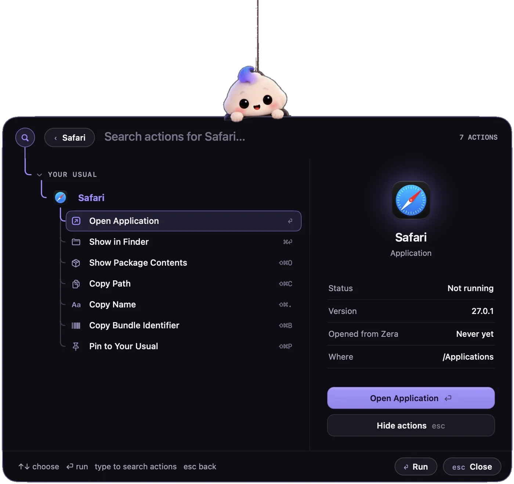
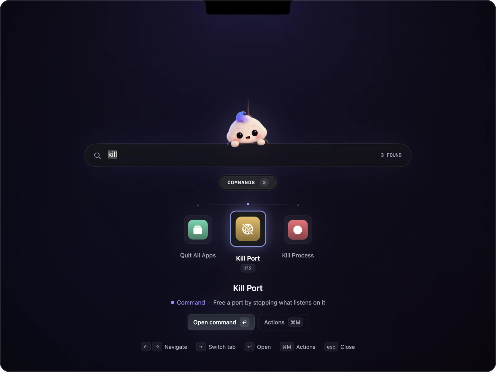
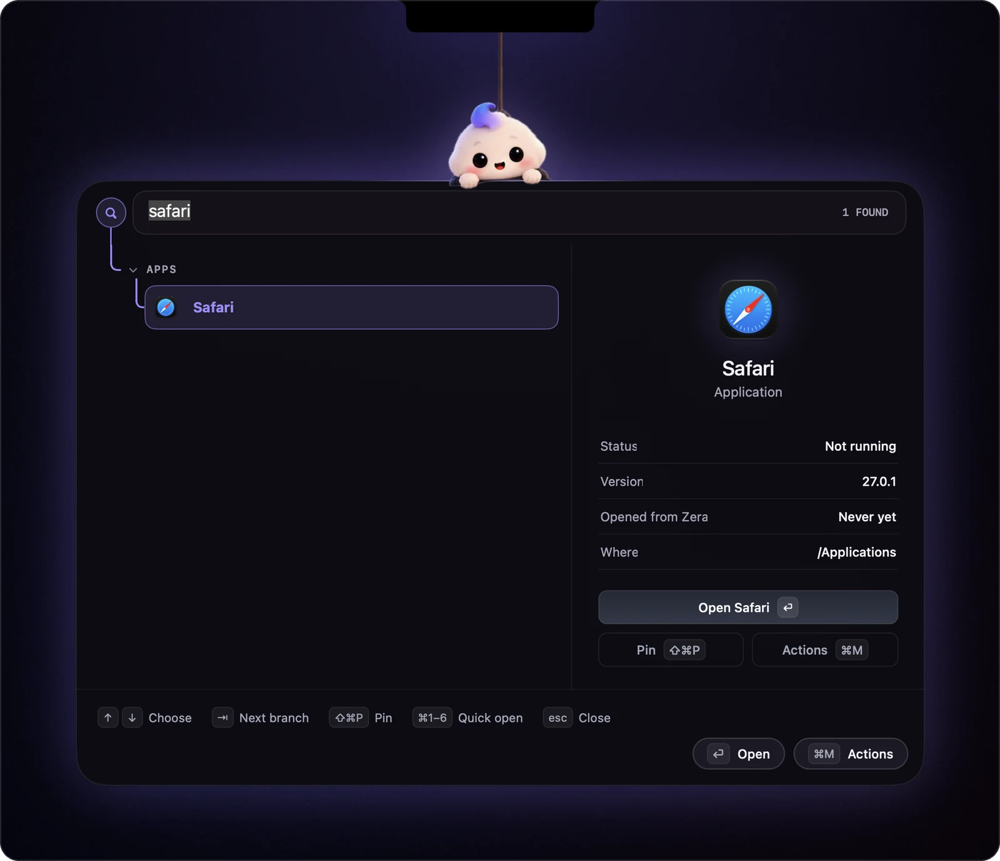
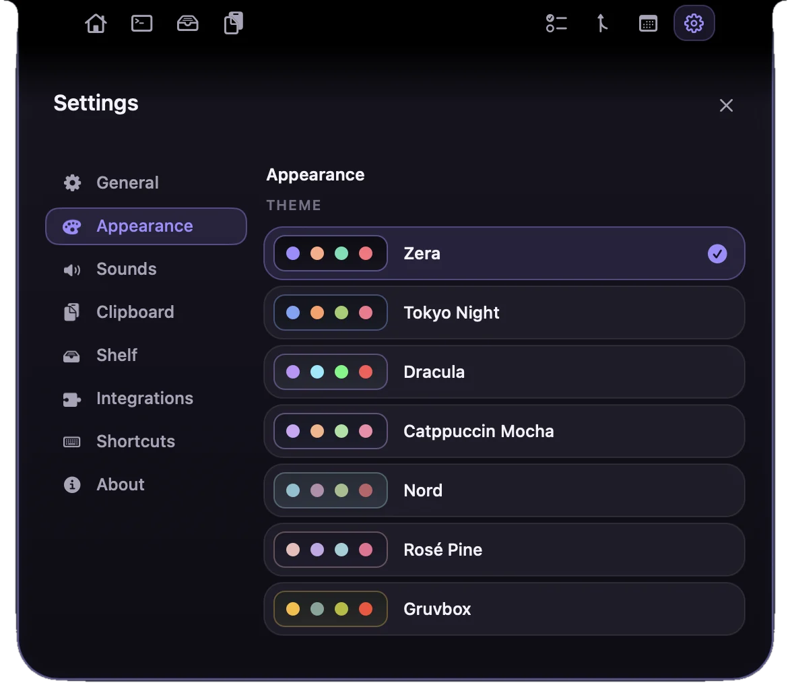

Your AI buddy
in the notch.
A little company. A lot less switching. Approve Claude Code, catch your files, focus on a task, and keep your day together. All from your Mac’s notch.
The little one up top? Move your cursor. Or say hello with a tap.
Finally, a job
for your notch.
Claude asks.
You approve.
While Claude Code works, Zera sprouts two wings beside the notch: what it's doing, how far it's got, and the command it wants to run. Approve it right there, no terminal.

Drop it on the notch.
Drag it anywhere.
Drag a file onto the notch and the Shelf opens to catch it. It waits there until you need it: tap to copy, or drag it straight into Slack, Mail, Finder or any other app.

Ask Claude
about any file.
Pick a file on the Shelf and ask for a summary, the key points, the full text, or anything else. The answer streams in right there, through your own Claude Code login.
Tap +. Type it.
Tab, and it starts.
A focus orb floats at the edge of your screen. Tap its + (or press ⌥⌘T anywhere), type Write docs #website 30m, and ⇥ starts the timer. Link a project to its repos and your commits become done tasks, ready for your timesheet.

Your Mac,
at a glance.
A slim strip on Home shows CPU, memory, GPU, Wi-Fi and battery. The numbers glide instead of flicker, and nothing moves around them. Tap it for the full picture.
↑ A live replica. Click it.

Every PR,
at a glance.
Reviews waiting on you, checks failing, and Approvals: the PRs you approved and yours that someone else approved, however old. Each PR has its own page: checks, reviewers, and Review in one click.


Meetings drop in,
right on time.
Your day from every calendar macOS knows (Google, Outlook, iCloud), with a heads-up and a Join button before each meeting. Plus water and break nudges, and a banner before the battery dies.

⌥Space.
Arrow. Return.
Press ⌥ Space and Zera drops down with your usual apps on an arc. ← → glide the choice along it and ⏎ tosses the app up to her. Or just type: apps, commands and actions.



Seven looks.
Or bring your own.
Zera, Tokyo Night, Dracula, Catppuccin, Nord, Rosé Pine and Gruvbox, plus your own from a JSON file. Try one: this page follows.
Hover her. The notch opens.

Clipboard history
Everything you copied, searchable, ⌘1–9 to paste. Passwords and private copies are never kept.

Focus
The card tracks your time against the estimate, and pauses itself when you walk away.

Heads-ups
Meetings with a Join button, water and breaks, new PRs, and a nudge before the battery runs out.

The wings
Claude Code's progress beside the notch, with Approve and Reject when it needs you.

Yours to tune
Themes, sounds, shortcuts, the Shelf's folders, and which tab opens when you tap her.

And her
She follows your cursor, blinks, and has opinions about being poked. Even your water break comes with company.
Your Mac.
Your data.
No account, no analytics, no telemetry, no update service. Zera runs on your own Claude Code login; nothing goes anywhere you didn't ask.
Three steps.
Or build it yourself
No Xcode project and no dependencies: just Swift and the Command Line Tools.
Questions
Does it need an API key or an account?
No. Zera uses the Claude Code CLI you're already signed in to. An Anthropic API key is optional, and there's no Zera account at all.
My Mac has no notch.
Zera hangs from the middle of the menu bar instead, and everything works the same.
How does the speed test work?
It runs macOS's built-in networkQuality tool when you press Run speed test, about 20 seconds, and remembers the last result. Live Wi-Fi rates and the link speed are read from the system all the time; nothing is tested in the background.
Why does macOS ask about Downloads and Desktop?
The Shelf's Fresh tab lists new files there. Zera only asks the first time you open Fresh, and only reads names, sizes and dates.
Will it slow my Mac down?
No. It's a native Swift app with no web views. Vitals are read once a second only while they're on screen; tab switches take a few milliseconds.
How does Ask Claude work?
When you click Summarize, Explain, Extract or ask a question, Zera sends that one file to Claude through the Claude Code CLI you're already signed in to, and streams the answer onto the file's page. Nothing is sent until you click.
Can I open apps from the keyboard?
Yes. ⌥Space brings down your usual apps on an arc; the arrow keys move along it and Return opens one. Typing searches every app, command and action, and ⌘1–⌘6 open the first six.
Is it really free?
Yes, and open source on GitHub. Issues and pull requests are welcome.